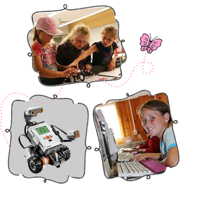

Welcome to Destination STEM!
Hey girls, do you want to try something different and fun? Parents, interested in having your daughters learn something new, while saving money at the same time? Sign up for one of our summer camps! They are absolutely free. This past summer, three camps, Destination Robotics, Destination Websites and Destination Animation were offered. Click here to see a video of the camps.
Destination STEM is a non-profit organization supported by our generous sponsors. Our mission is to increase girls' interest and engagement in science, technology, engineering, and mathematics (STEM) and to demonstrate that STEM studies are exciting and can open doors to endless possibilities. Our summer camps enhance girls' STEM learning experiences through fun, hands-on activities in an all-girls environment. Our camp counselors serve as positive female role models. We also provide girls with opportunities to learn about exciting careers from professional women. We believe that every girl should have a chance to explore the fascinating world of STEM!